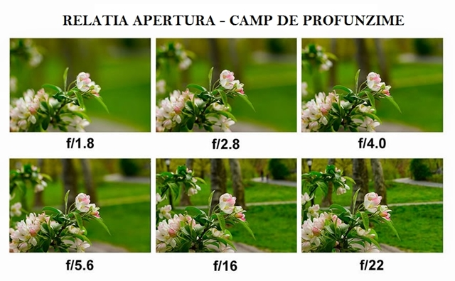
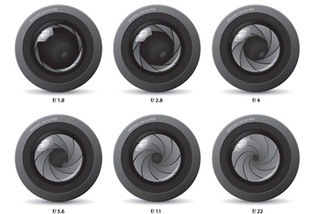
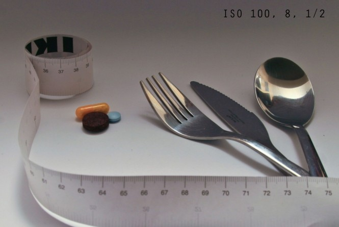
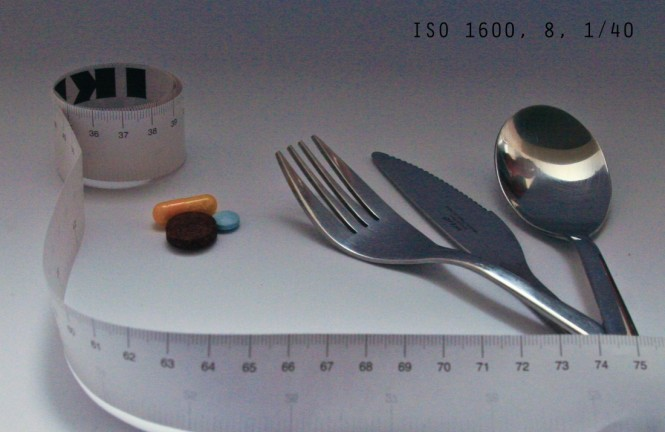
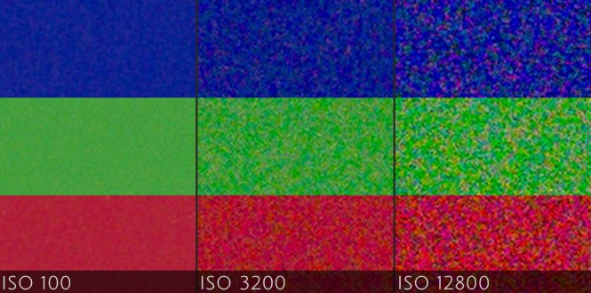
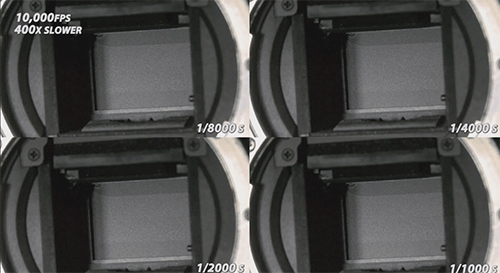

Triunghiul expunerii
Cele trei componente ce stau la baza fotografiei digitale pot fi expirmate grafic cu ajutorul unui triunghi
Există trei componente ce stau la baza oricări fotografii digitale. Odată înțelese, îți va fi mult mai ușor să înțelegi ce se întâmplă cu fotografiile tale.
-
Apertura
Fără îndoială, subiectul „apertură” reprezintă unul dintre cele mai discutate subiecte, întrucât aceasta fie adaugă dimensiune imaginii, prin estomparea fundalului (efectul „Bokeh”), fie, ca prin magie, aduce toate elementele imaginii în focus. Fotografii, adesea când se referă la apertură, o să folosească termenul de „diafragmă” și indiferent de termenul folosit, se vor referi la același lucru.
Fotografii, adesea când se referă la apertură, o să folosească termenul de „diafragmă” și indiferent de termenul folosit, se vor referi la același lucru.
 -
ISO
ISO (International Organization for Standardization) se referă la o valoare standard acordată pentru o anume sensibilitate a materialului fotosensibil. Sensibilitatea este o caracteristică a captorului (senzorul) sau a filmului foto care determină cantitatea de lumină de care avem nevoie pentru a obține o expunere corectă. Cele mai cunoscute valori sunt: 25, 50, 100, 200, 400, 800, 1600, 3200 și 6400. În sens ascendent, fiecare valoare ISO este de două ori mai sensibilă decât precedenta. Exemplu: ISO 800 este de 2x mai sensibil decât ISO 400 și doar pe jumătate la fel de sensibil ca ISO1600. Aparatele digitale ne permit și setarea/alegerea de valori ISO intermediare. Exemplu: ISO 80, ISO 640 etc. Pentru a expune corect, captorul aparatului foto (senzorul în cazul aparatelor foto digitale), are nevoie de cantitate de lumină invers proporțională cu sensibilitatea. Astfel, de exemplu pentru valoarea ISO 100 vom avea nevoie de mai multă lumină dar și o calitate foarte bună a imaginii, în timp ce în cazul valorilor de sensibilitate mai mari, vom necesita o cantitate de lumină mai mică, dar vom risca apariția zgomotului.
 -
Viteza de declașare (Shutter Speed)
Obturatorul unei camere este o parte mecanică a camerei foto care dictează numărul de fracțiuni de secundă, secunde sau minute care va permite luminii să pătrundă pe senzor ca să realizeze fotografia dorită de tine. Putem spune că obturatorul acționează precum o cortină, care atunci când se ridică, lasă lumina să treacă, iar când „cortina” se lasă, blochează lumina urmând procesarea efectivă a imaginii captate. Ca să poți ridica și lăsa „cortina” jos, este necesar să apeși butonul de declanșare al camerei, iar timpul de la ridicarea „cortinei” până la lăsarea ei jos, poartă denumirea de timp de expunere sau viteza obturatorului (cunoscută mai des sub denumirea de „viteză de declanșare”
).